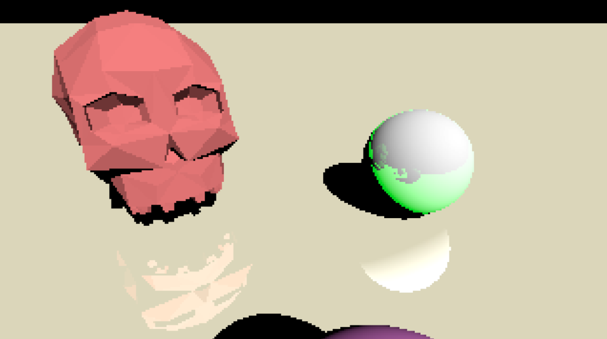
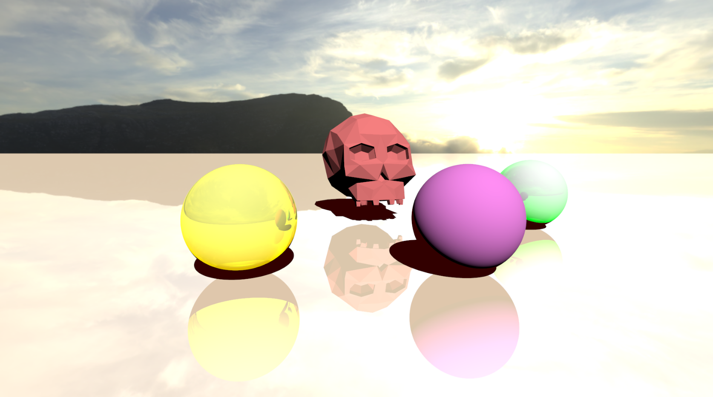
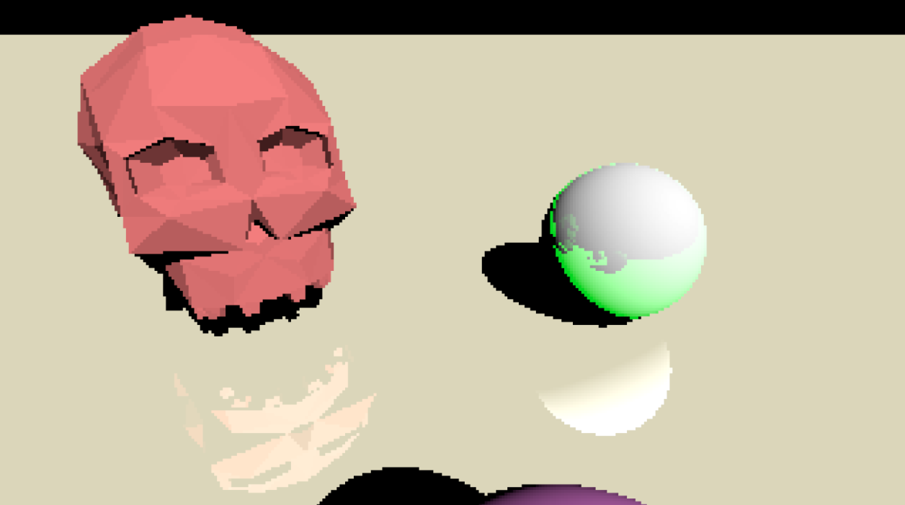
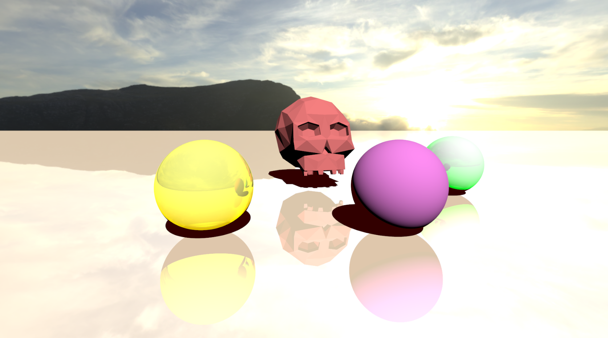

Ray Tracing
[ View Source on GitHub ]
I worked on this as a final project of my choice for a computer graphics class at UCI. The original goal was to combine the efficacy of modern day graphics techniques, in this cade ray traced reflections, with retro stylization, in this case a simple compression ("pixelization") algorithm also designed by myself. You can see the results below, or you can check out the source code, shaders and all, at the link above!
 


